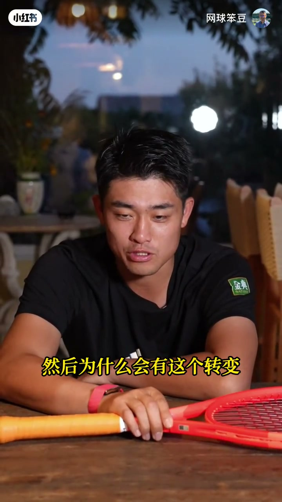
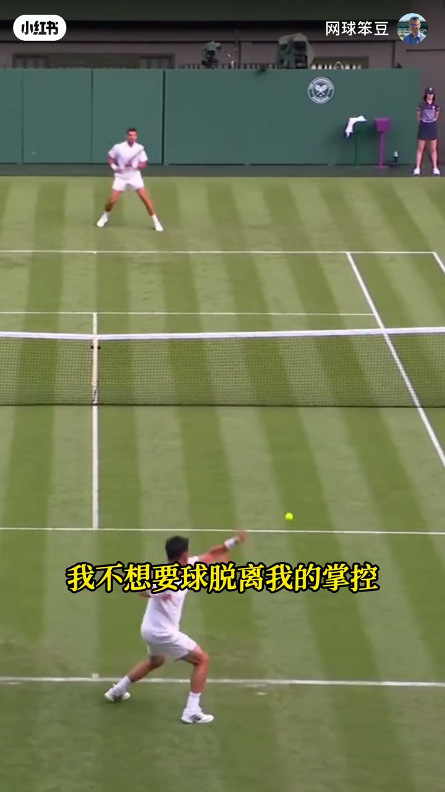
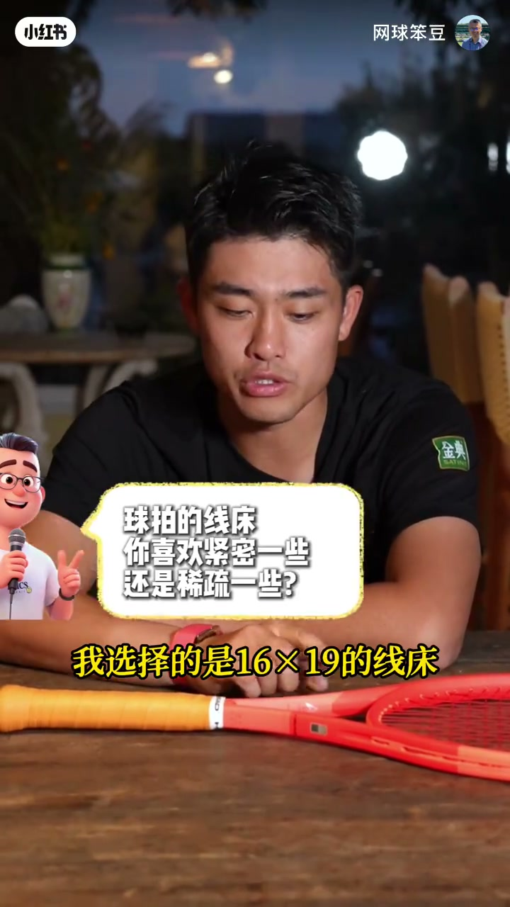
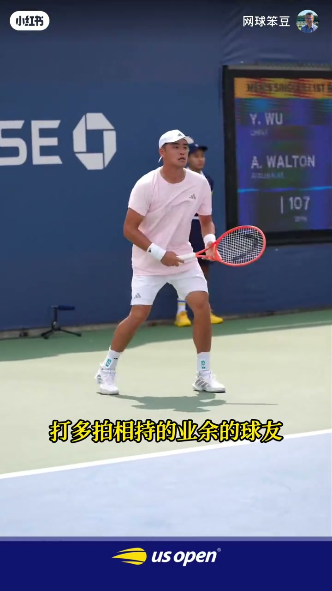
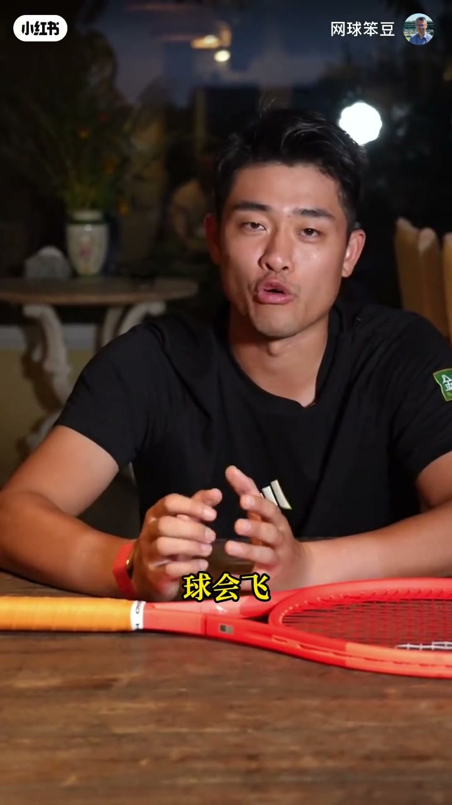
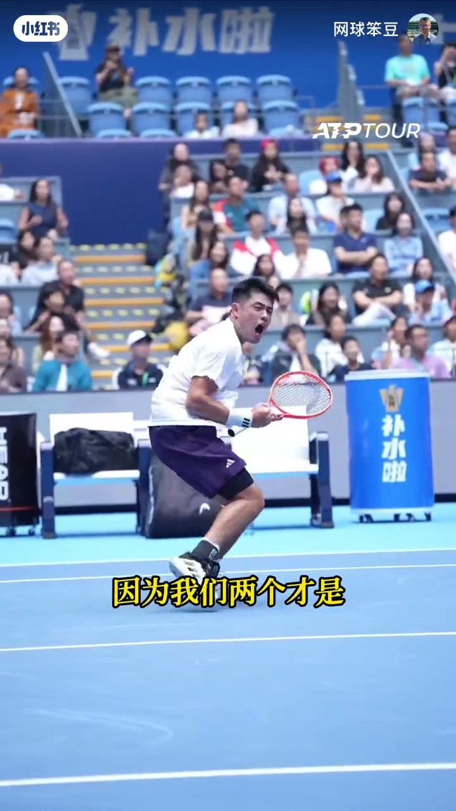

内容要点
知识结构
并非一见钟情：早年用过另一把绿色拍（转录作 LO3/L3），转 Radical「还是始于颜值」。真正相配点是操控更硬——打攻击型网球，不想让球脱离掌控。
自称对磅数更敏感；重量差两三克「一半都在装」，但磅数能分辨。美网球弹就加一磅。调整几乎都落在球线上；选 16×19，觉得 18×20 太密，也带童年自己穿线省工的玩笑。
试拍要求只贴型号 1–6、不贴参数，靠手感选。无意透露拍子定制后自嘲「说漏了」。观点：球商很高、靠理解赢球的人未必适合；更适合喜欢底线多拍相持的业余球友。配重：拍头加重挥速与挥重更大、手臂负担更高；拍柄加重换控制，拦网削球更受益——他自己手臂够快，重量更多放拍柄。
场地类型不是最大变量，天气与球才是：冷则天硬球易飞，适当降磅；热或高海拔球飞也调磅。常态约 53 磅，训练备 52/53/54 试手感。线是 HEAD Hawk；自己送拍拿拍；大赛不多备拍，随身六把。童年教练说穿线是投资：15–30 美金换一场胜利「何乐而不为」。
与 Radical「一起成长」；重要夺冠拍、甚至砸坏的拍都收藏。丢过衣服行李没丢拍包，托运贴易碎标。承认摔过拍，但「自己对你不好可以，别人不行」；不喜欢教练用他刚穿好的新线拍，为此起过冲突——这是他对球拍的执念。
吴易昺的器材逻辑很清晰：拍型服务攻击控制，日常靠磅数与配重精细纠偏，线床与手感优先于参数迷信；适合谁，取决于你是否需要「硬控」与底线相持，而不是盲目追职业同款。
图文实录
开场：能说吗？从颜值到硬拍
主持人先抛出器材党最关心的问题：你用的球拍，和店里买的 Radical 是一回事吗？吴易昺愣了一拍：「啊？这是能说的吗？」气氛立刻松下来。接着追问是不是和 Radical 一见钟情——他否定：刚开始用的是另一把绿色拍（Whisper 记作 LO3/L3），转变「还是始于它的颜值」。

聊到吸引点，他收敛成打法匹配：比起别的拍，操控性更硬一些。因为打的是攻击型网球，「我不想要球脱离我的掌控」，所以更喜欢硬一点的拍子。画面切到草地球场对拉，把这句话钉在实战节奏上。

主持人也试探 Extreme、Speed：以他的节奏和手速，Speed 会不会「成了中国新的……」阿丙说可以尝试，但马上补边界——还要看线是否穿成一样、球是否一样；两把或许能分辨，七把就太多了。
磅数敏感：线比拍更常动手
他自称对磅数更敏感：重量差两三克，「能拿出来的一半都是在装」；磅数则真能感到。今年美网感觉球弹，就加了一磅。主持人归纳：你对球线的精细程度大于球拍。阿丙接上自己的打法逻辑——要把失误率压到最小才能发挥优势，线和球一旦失衡，失误会暴涨，所以调整基本落在球线磅数上。
线床他选 16×19，觉得 18×20 有点太密；又半开玩笑说，也许是小时候自己穿线，18×20 要多穿四条、多花五六分钟。试拍时他走「感觉流」：要求上面不要贴任何参数，只贴型号 123456，在六把里选最喜欢的那一把，避免被数字带着纠结。

定制说漏嘴，以及谁更适合 Radical
主持人点破：你刚才无形中透露，球拍其实是定制的。阿丙立刻接「说漏了」，场面一笑带过。随后他谈适合人群：球商非常高、靠对比赛理解赢球的人，「我觉得他并不是很适合 Radical」；更适合喜欢正面对抗、底线多拍相持的那类业余球友。他自己从偏软的 L3 换到 Radical，也是折衷选择。

配重他讲得很具体：重量放拍头，挥速更快、挥重更大，对手臂损伤也可能更大；重量加在拍柄，获得更多控制，拦网、削球等要精细手感时帮助更明显（转录「篮网、销球」应为拦网、削球）。主持人打趣：是不是暗示大家在拍头贴铅片？阿丙说自己手臂速度已经够快，所以选择把重量更多放在拍柄里。
天气与球驱动改磅，日常六把与 Hawk 线
场地类型在他看来不是最大影响，更多是天气和球。天冷球变硬、更容易飞，他会适当调低磅数；比较热或高海拔的地方球也会飞，同样做磅数调整。正常穿大约 53 磅，会让穿线师穿成 52、53、54，训练时试哪一把最顺手。他不太直接跟穿线师沟通细节，也不想让教练代送，都是自己送拍、拿拍。

球线品牌也是海德（HEAD）的 Hawk。大赛不会特别多准备拍子，随身带六把，除非「对它有点生气」或发生意外。童年舍不得穿线因为贵，教练说这是对自己的投资：15 美金或 30 美金换一场胜利，「何乐而不为」。
一起成长：收藏、托运与执念
被问有没有和 Radical 一起成长、一起变好的感觉，他答「是啊」：家里会收藏重要比赛、夺冠用过的拍；去年跟「梅总」打砸完的那把也还放着。要改进拍子，他说不太出什么，「可能是我自身需要有改进更多一些」。旅行上算「不幸中的万幸」——丢过装衣服的行李，没丢过拍包；墨西哥那次衣服包丢了球拍还在，仍能训练。拍包基本托运，贴个易碎标（转录 e-save）。
主持人问有没有打过、骂过、甚至摔过它——「摔过，而且有很多 footage」。但边界很清楚：自己可以对它不好，别人不行，「因为我们两个才是最有情感连接的」。另一条执念是训练时不喜欢教练用他的拍：新穿好的线自己还没用过，却被剪两球——为此和教练有过冲突，「你干嘛不自己带一把拍子呢」。收束一句：这是我对球拍比较有执念的一个地方。
